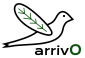
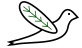
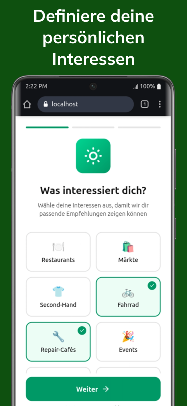
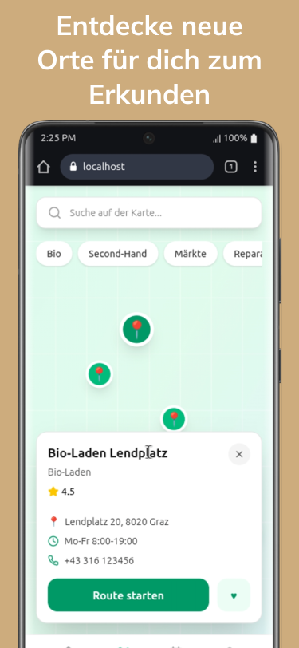

Nachhaltig ankommen. — in Graz. Mit arriv0



arriv0 hilft jungen Menschen zwischen 18 und 35; Studierende, Erasmus-Gäste, Berufseinsteiger, die neu in Graz sind, sich nachhaltig zurechtzufinden. Bio-Läden, Bauern und Flohmärkte, Repair-Cafés, Studi-Rabatte und Sharing-Angebote.
Alle Inhalte werden von Menschen recherchiert und kuratiert, bewusst ohne KI für vertrauenswürdige, transparente Information. Die App verfolgt dabei einen schlanken und energieffizenten Ansatz und repräsentiert dabei unsere nachhaltige und aufrichtige Arbeitsweise.
arriv0 lebt für und durch die aktive Community. Scanne einfach den QR-Code, und sei einer unserer ersten User. Dein Feedback formt die App von Anfang an mit.